2022 Advanced Higher Biology - Paper 1 questions
Source: Scottish Qualifications Authority (SQA) / Qualifications Scotland. This is a StemInteract HTML companion, not an official HTML edition. Selectable text is supplied alongside original page images. Use the images or original PDF for equations, powers, fractions, vector notation, tables and diagrams; text extraction cannot fully preserve mathematical layout.
Jump to a question
PDF page 1
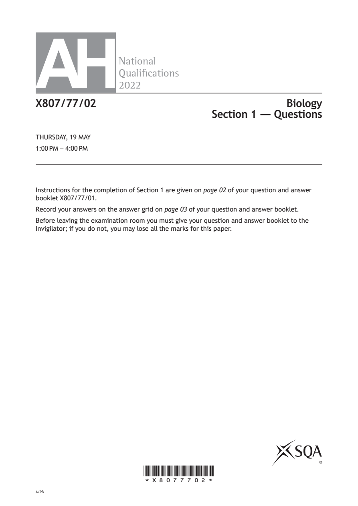
Selectable page text
AH
National
Qualications
2022
X807/77/02 Biology
Section 1 — Questions
THURSDAY, 19 MAY
1:00 PM – 4:00 PM
Instructions for the completion of Section 1 are given on page 02 of your question and answer
booklet X807/77/01.
Record your answers on the answer grid on page 03 of your question and answer booklet.
Before leaving the examination room you must give your question and answer booklet to the
Invigilator; if you do not, you may lose all the marks for this paper.
©
*X8077702*
A/PBPDF page 2
Paper 1, Question 1Paper 1, Question 2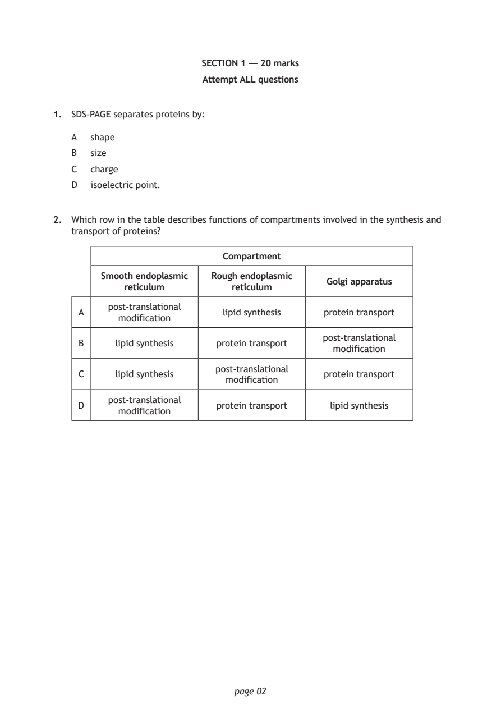
Selectable page text
SECTION 1 — 20 marks
Attempt ALL questions
1. SDS‑PAGE separates proteins by:
A shape
B size
C charge
D isoelectric point.
2. Which row in the table describes functions of compartments involved in the synthesis and
transport of proteins?
Compartment
Smooth endoplasmic Rough endoplasmic
Golgi apparatus
reticulum reticulum
post‑translational
A lipid synthesis protein transport
modification
post‑translational
B lipid synthesis protein transport
modification
post‑translational
C lipid synthesis protein transport
modification
post‑translational
D protein transport lipid synthesis
modification
page 02PDF page 3
Paper 1, Question 3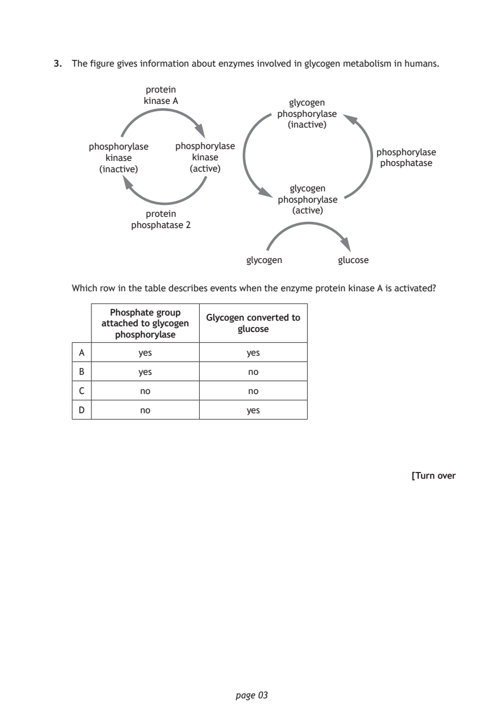
Selectable page text
3. The figure gives information about enzymes involved in glycogen metabolism in humans.
protein
kinase A glycogen
phosphorylase
(inactive)
phosphorylase phosphorylase
phosphorylase
kinase kinase
phosphatase
(inactive) (active)
glycogen
phosphorylase
(active)
protein
phosphatase 2
glycogen glucose
Which row in the table describes events when the enzyme protein kinase A is activated?
Phosphate group
Glycogen converted to
attached to glycogen
glucose
phosphorylase
A yes yes
B yes no
C no no
D no yes
[Turn over
page 03PDF page 4
Paper 1, Question 4Paper 1, Question 5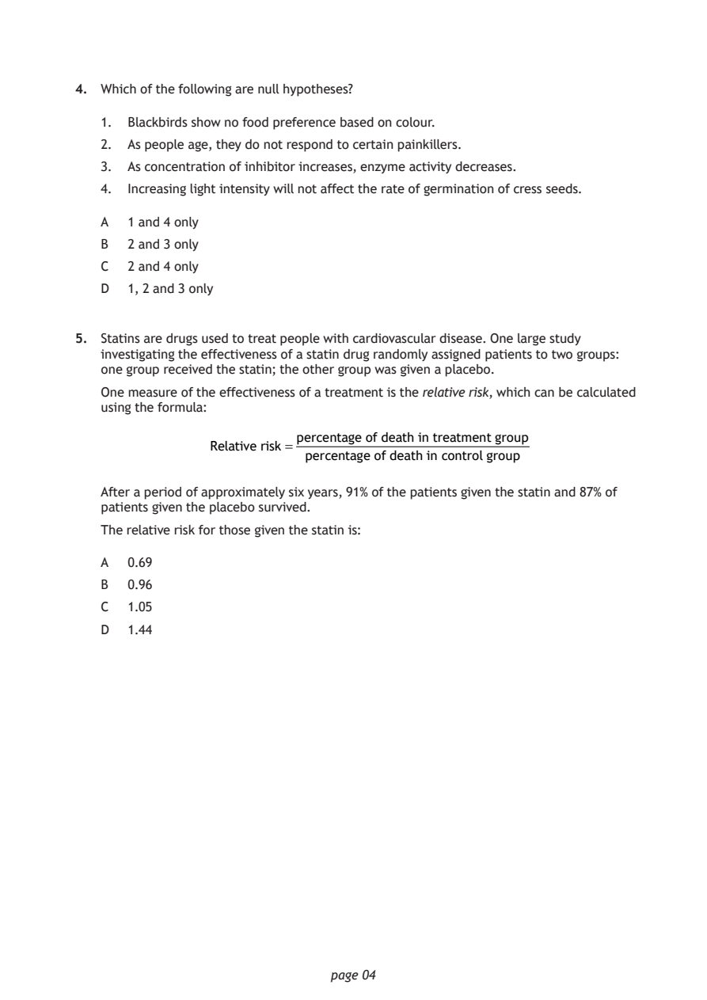
Selectable page text
4. Which of the following are null hypotheses?
1. Blackbirds show no food preference based on colour.
2. As people age, they do not respond to certain painkillers.
3. As concentration of inhibitor increases, enzyme activity decreases.
4. Increasing light intensity will not affect the rate of germination of cress seeds.
A 1 and 4 only
B 2 and 3 only
C 2 and 4 only
D 1, 2 and 3 only
5. Statins are drugs used to treat people with cardiovascular disease. One large study
investigating the effectiveness of a statin drug randomly assigned patients to two groups:
one group received the statin; the other group was given a placebo.
One measure of the effectiveness of a treatment is the relative risk, which can be calculated
using the formula:
percentage of death in treatment group
Relative risk =
percentage of death in control group
After a period of approximately six years, 91% of the patients given the statin and 87% of
patients given the placebo survived.
The relative risk for those given the statin is:
A 0.69
B 0.96
C 1.05
D 1.44
page 04PDF page 5
Paper 1, Question 6Paper 1, Question 7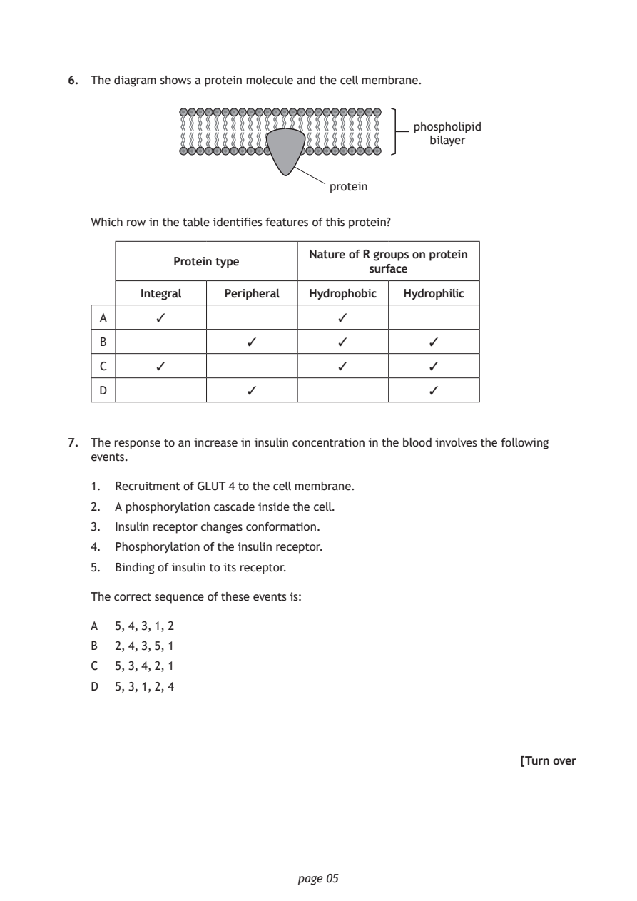
Selectable page text
6. The diagram shows a protein molecule and the cell membrane.
phospholipid
bilayer
protein
Which row in the table identifies features of this protein?
Nature of R groups on protein
Protein type
surface
Integral Peripheral Hydrophobic Hydrophilic
A ✓ ✓
B ✓ ✓ ✓
C ✓ ✓ ✓
D ✓ ✓
7. The response to an increase in insulin concentration in the blood involves the following
events.
1. Recruitment of GLUT 4 to the cell membrane.
2. A phosphorylation cascade inside the cell.
3. Insulin receptor changes conformation.
4. Phosphorylation of the insulin receptor.
5. Binding of insulin to its receptor.
The correct sequence of these events is:
A 5, 4, 3, 1, 2
B 2, 4, 3, 5, 1
C 5, 3, 4, 2, 1
D 5, 3, 1, 2, 4
[Turn over
page 05PDF page 6
Paper 1, Question 8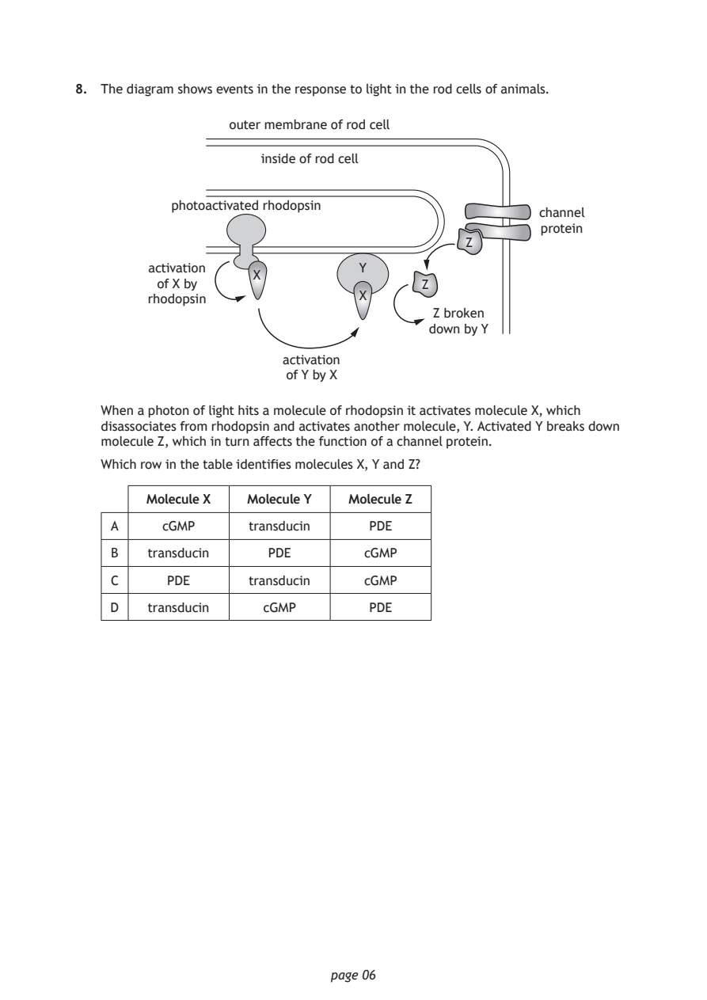
Selectable page text
8. The diagram shows events in the response to light in the rod cells of animals.
outer membrane of rod cell
inside of rod cell
photoactivated rhodopsin
channel
protein
Z
activation Y
X
of X by Z
rhodopsin X
Z broken
down by Y
activation
of Y by X
When a photon of light hits a molecule of rhodopsin it activates molecule X, which
disassociates from rhodopsin and activates another molecule, Y. Activated Y breaks down
molecule Z, which in turn affects the function of a channel protein.
Which row in the table identifies molecules X, Y and Z?
Molecule X Molecule Y Molecule Z
A cGMP transducin PDE
B transducin PDE cGMP
C PDE transducin cGMP
D transducin cGMP PDE
page 06PDF page 7
Paper 1, Question 9Paper 1, Question 10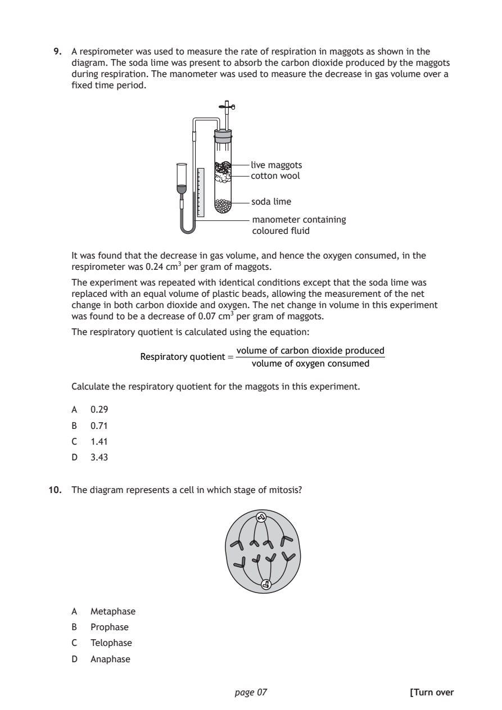
Selectable page text
9. A respirometer was used to measure the rate of respiration in maggots as shown in the
diagram. The soda lime was present to absorb the carbon dioxide produced by the maggots
during respiration. The manometer was used to measure the decrease in gas volume over a
fixed time period.
live maggots
cotton wool
soda lime
manometer containing
coloured fluid
It was found that the decrease in gas volume, and hence the oxygen consumed, in the
respirometer was 0.24 cm³ per gram of maggots.
The experiment was repeated with identical conditions except that the soda lime was
replaced with an equal volume of plastic beads, allowing the measurement of the net
change in both carbon dioxide and oxygen. The net change in volume in this experiment
was found to be a decrease of 0.07 cm³ per gram of maggots.
The respiratory quotient is calculated using the equation:
volume of carbon dioxide produced
Respiratory quotient =
volume of oxygen consumed
Calculate the respiratory quotient for the maggots in this experiment.
A 0.29
B 0.71
C 1.41
D 3.43
10. The diagram represents a cell in which stage of mitosis?
A Metaphase
B Prophase
C Telophase
D Anaphase
page 07 [Turn overPDF page 8
Paper 1, Question 11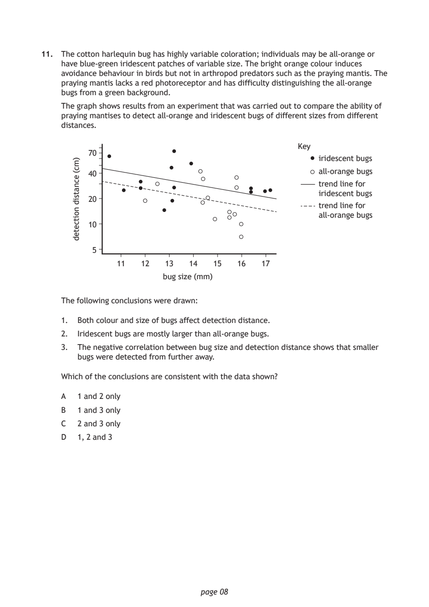
Selectable page text
11. The cotton harlequin bug has highly variable coloration; individuals may be all‑orange or
have blue‑green iridescent patches of variable size. The bright orange colour induces
avoidance behaviour in birds but not in arthropod predators such as the praying mantis. The
praying mantis lacks a red photoreceptor and has difficulty distinguishing the all‑orange
bugs from a green background.
The graph shows results from an experiment that was carried out to compare the ability of
praying mantises to detect all‑orange and iridescent bugs of different sizes from different
distances.
page 08
)mc(
ecnatsid
noitceted
Key
70
iridescent bugs
all‑orange bugs
40
trend line for
iridescent bugs
20
trend line for
all‑orange bugs
10
5
11 12 13 14 15 16 17
bug size (mm)
The following conclusions were drawn:
1. Both colour and size of bugs affect detection distance.
2. Iridescent bugs are mostly larger than all‑orange bugs.
3. The negative correlation between bug size and detection distance shows that smaller
bugs were detected from further away.
Which of the conclusions are consistent with the data shown?
A 1 and 2 only
B 1 and 3 only
C 2 and 3 only
D 1, 2 and 3PDF page 9
Paper 1, Question 12Paper 1, Question 13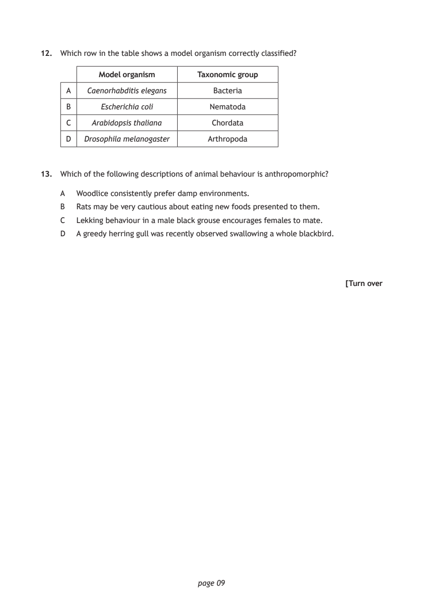
Selectable page text
12. Which row in the table shows a model organism correctly classified?
Model organism Taxonomic group
A Caenorhabditis elegans Bacteria
B Escherichia coli Nematoda
C Arabidopsis thaliana Chordata
D Drosophila melanogaster Arthropoda
13. Which of the following descriptions of animal behaviour is anthropomorphic?
A Woodlice consistently prefer damp environments.
B Rats may be very cautious about eating new foods presented to them.
C Lekking behaviour in a male black grouse encourages females to mate.
D A greedy herring gull was recently observed swallowing a whole blackbird.
[Turn over
page 09PDF page 10
Paper 1, Question 14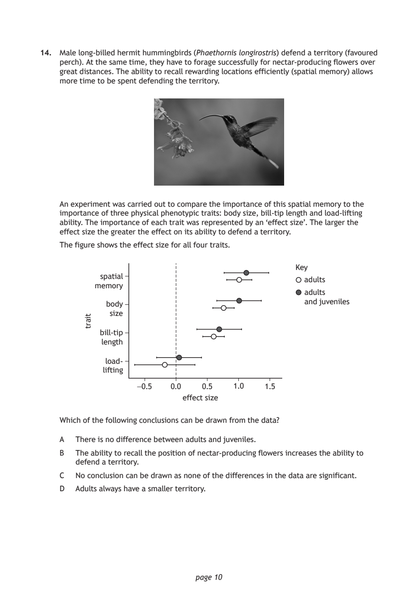
Selectable page text
14. Male long‑billed hermit hummingbirds (Phaethornis longirostris) defend a territory (favoured
perch). At the same time, they have to forage successfully for nectar‑producing flowers over
great distances. The ability to recall rewarding locations efficiently (spatial memory) allows
more time to be spent defending the territory.
An experiment was carried out to compare the importance of this spatial memory to the
importance of three physical phenotypic traits: body size, bill‑tip length and load‑lifting
ability. The importance of each trait was represented by an ‘effect size’. The larger the
effect size the greater the effect on its ability to defend a territory.
The figure shows the effect size for all four traits.
spatial
memory
body
size
bill‑tip
length
load‑
lifting
page 10
tiart
Key
adults
adults
and juveniles
−0.5 0.0 0.5 1.0 1.5
effect size
Which of the following conclusions can be drawn from the data?
A There is no difference between adults and juveniles.
B The ability to recall the position of nectar‑producing flowers increases the ability to
defend a territory.
C No conclusion can be drawn as none of the differences in the data are significant.
D Adults always have a smaller territory.PDF page 11
Paper 1, Question 15Paper 1, Question 16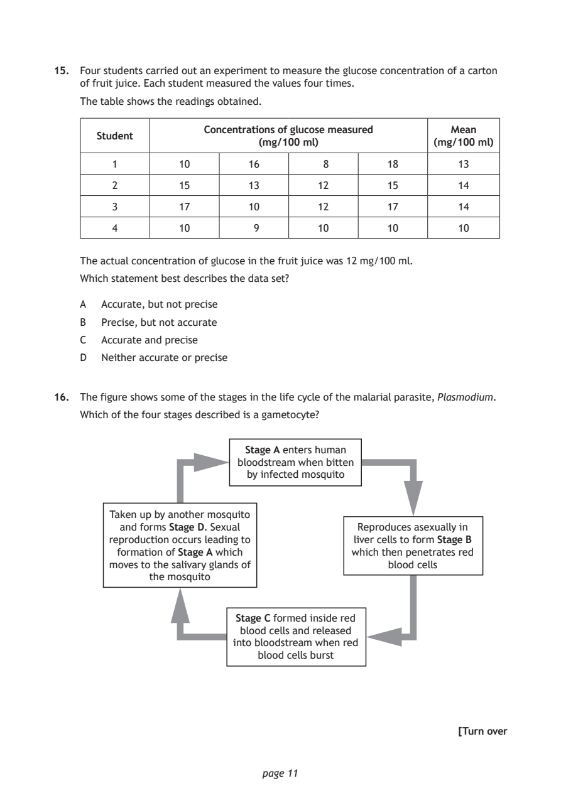
Selectable page text
15. Four students carried out an experiment to measure the glucose concentration of a carton
of fruit juice. Each student measured the values four times.
The table shows the readings obtained.
Concentrations of glucose measured Mean
Student
(mg/100 ml) (mg/100 ml)
1 10 16 8 18 13
2 15 13 12 15 14
3 17 10 12 17 14
4 10 9 10 10 10
The actual concentration of glucose in the fruit juice was 12 mg/100 ml.
Which statement best describes the data set?
A Accurate, but not precise
B Precise, but not accurate
C Accurate and precise
D Neither accurate or precise
16. The figure shows some of the stages in the life cycle of the malarial parasite, Plasmodium.
Which of the four stages described is a gametocyte?
Stage A enters human
bloodstream when bitten
by infected mosquito
Taken up by another mosquito
and forms Stage D. Sexual Reproduces asexually in
reproduction occurs leading to liver cells to form Stage B
formation of Stage A which which then penetrates red
moves to the salivary glands of blood cells
the mosquito
Stage C formed inside red
blood cells and released
into bloodstream when red
blood cells burst
[Turn over
page 11PDF page 12
Paper 1, Question 17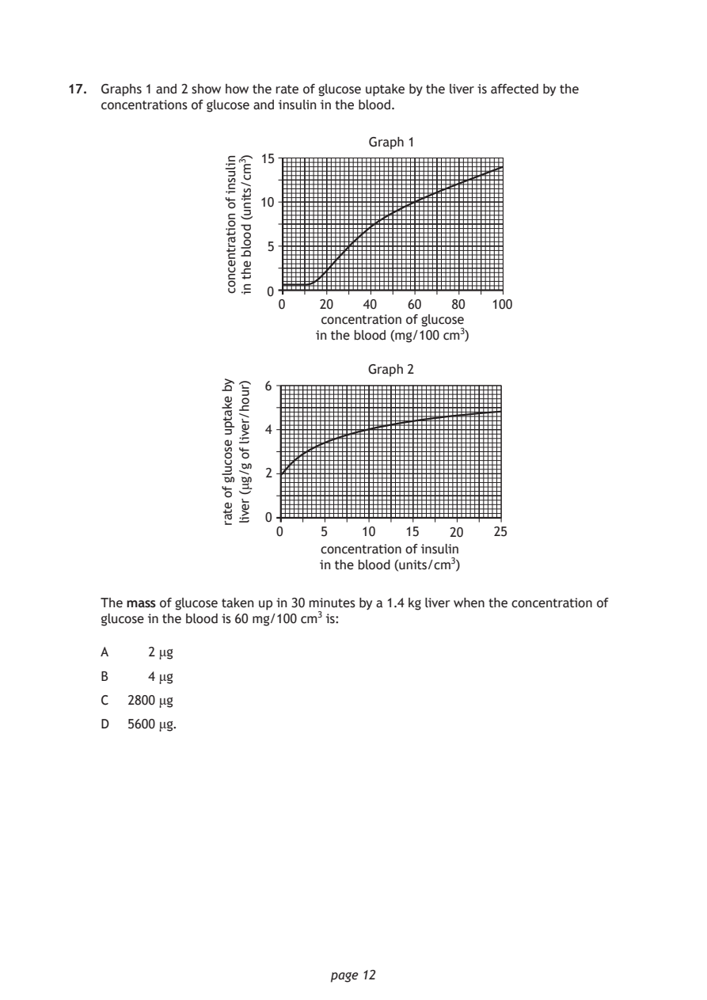
Selectable page text
17. Graphs 1 and 2 show how the rate of glucose uptake by the liver is affected by the
concentrations of glucose and insulin in the blood.
page 12
nilusni
fo
noitartnecnoc
)3mc/stinu(
doolb
eht
ni
Graph 1
15
10
5
0
0 20 40 60 80 100
concentration of glucose
in the blood (mg/100 cm³)
Graph 2
concentration of insulin
in the blood (units/cm³)
yb
ekatpu
esoculg
fo
etar
)ruoh/revil
fo
g/gμ(
revil
6
4
2
0
0 5 10 15 20 25
The mass of glucose taken up in 30 minutes by a 1.4 kg liver when the concentration of
glucose in the blood is 60 mg/100 cm³ is:
A 2 μg
B 4 μg
C 2800 μg
D 5600 μg.PDF page 13
Paper 1, Question 18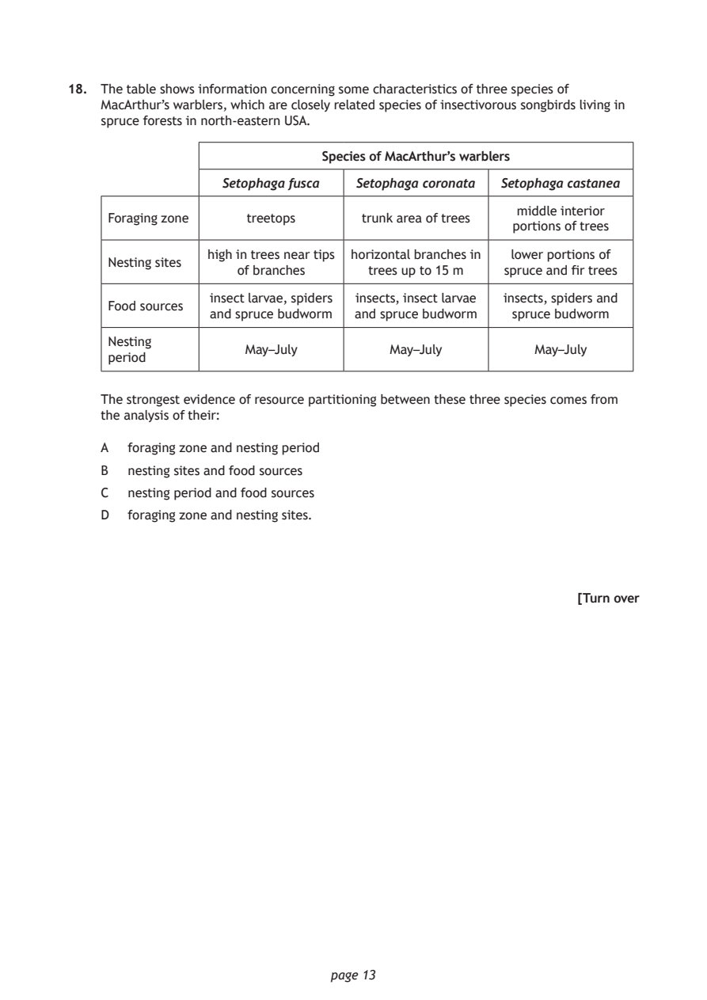
Selectable page text
18. The table shows information concerning some characteristics of three species of
MacArthur’s warblers, which are closely related species of insectivorous songbirds living in
spruce forests in north‑eastern USA.
Species of MacArthur’s warblers
Setophaga fusca Setophaga coronata Setophaga castanea
middle interior
Foraging zone treetops trunk area of trees
portions of trees
high in trees near tips horizontal branches in lower portions of
Nesting sites
of branches trees up to 15 m spruce and fir trees
insect larvae, spiders insects, insect larvae insects, spiders and
Food sources
and spruce budworm and spruce budworm spruce budworm
Nesting
May–July May–July May–July
period
The strongest evidence of resource partitioning between these three species comes from
the analysis of their:
A foraging zone and nesting period
B nesting sites and food sources
C nesting period and food sources
D foraging zone and nesting sites.
[Turn over
page 13PDF page 14
Paper 1, Question 19Paper 1, Question 20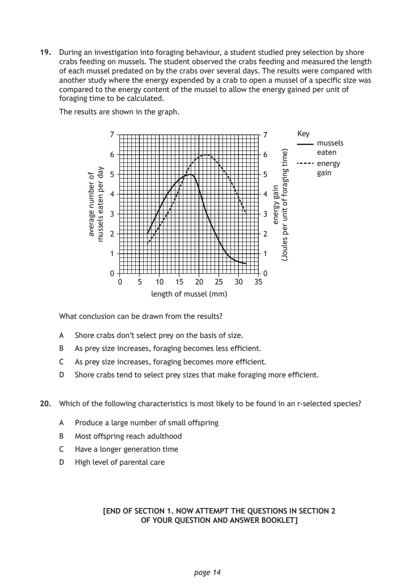
Selectable page text
19. During an investigation into foraging behaviour, a student studied prey selection by shore
crabs feeding on mussels. The student observed the crabs feeding and measured the length
of each mussel predated on by the crabs over several days. The results were compared with
another study where the energy expended by a crab to open a mussel of a specific size was
compared to the energy content of the mussel to allow the energy gained per unit of
foraging time to be calculated.
The results are shown in the graph.
page 14
fo
rebmun
egareva
yad
rep
netae
slessum
length of mussel (mm)
niag
ygrene
)emit
gnigarof
fo
tinu
rep
seluoJ(
7 7 Key
mussels
eaten
6 6
energy
5 5 gain
4 4
3 3
2 2
1 1
0 0
0 5 10 15 20 25 30 35
What conclusion can be drawn from the results?
A Shore crabs don’t select prey on the basis of size.
B As prey size increases, foraging becomes less efficient.
C As prey size increases, foraging becomes more efficient.
D Shore crabs tend to select prey sizes that make foraging more efficient.
20. Which of the following characteristics is most likely to be found in an r‑selected species?
A Produce a large number of small offspring
B Most offspring reach adulthood
C Have a longer generation time
D High level of parental care
[END OF SECTION 1. NOW ATTEMPT THE QUESTIONS IN SECTION 2
OF YOUR QUESTION AND ANSWER BOOKLET]PDF page 15

Selectable page text
[BLANK PAGE]
DO NOT WRITE ON THIS PAGE
page 15PDF page 16
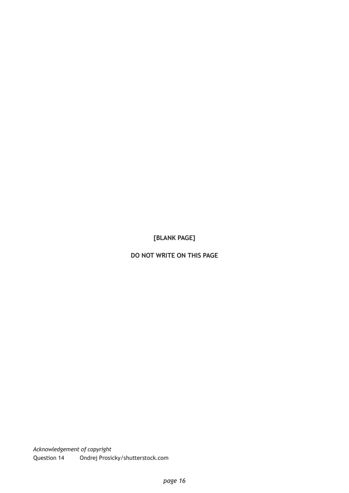
Selectable page text
[BLANK PAGE]
DO NOT WRITE ON THIS PAGE
Acknowledgement of copyright
Question 14 Ondrej Prosicky/shutterstock.com
page 16